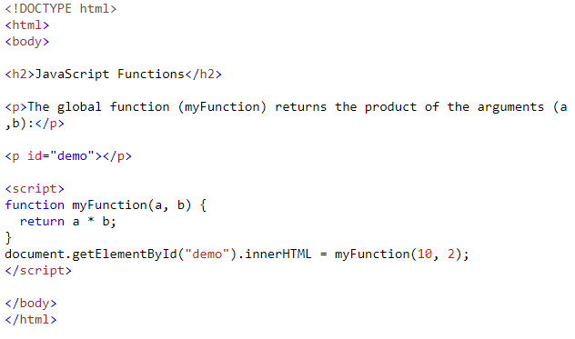
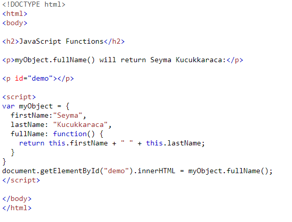
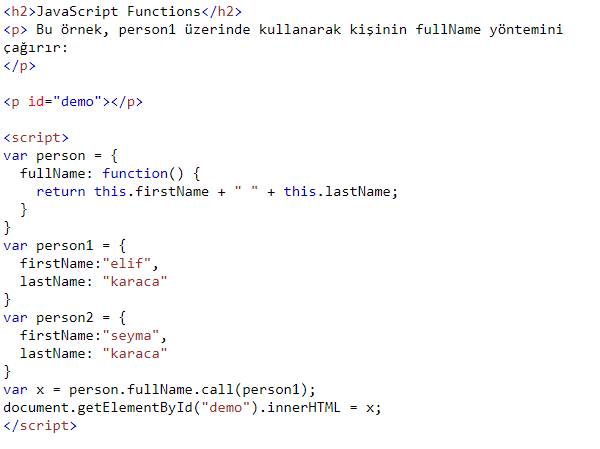
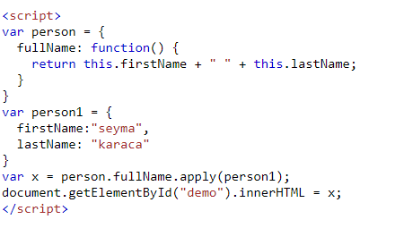
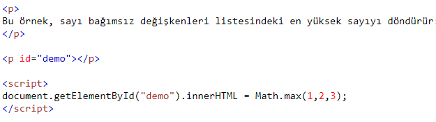

FONKSİYON KULLANIMI
Daha önceden fonksiyonlardan bahsetmiştik.Şimdi de kullanımına bakalım.
JavaScript Fonksiyon Çağırma
*İşlev tanımlandığında işlev içindeki kod yürütülmez.
*Bir işlevin içindeki kod, işlev çağrıldığında yürütülür.
*"Bir işlevi çağırmak" yerine "bir işlevi çağır" terimini kullanmak yaygındır.
*"Bir işlevi çağırmak", "bir işlevi başlatmak" veya "bir işlevi yürütmek" demek de yaygındır.
*Bu öğreticide, invoke kullanacağız, çünkü bir JavaScript işlevi çağrılmadan çağrılabilir.
Bir Fonksiyonu Fonksiyon Olarak Çağırma
Örnek
JavaScript Functions
The global function (myFunction) returns the product of the arguments (a ,b):20
Yukarıdaki işlev herhangi bir nesneye ait değildir. Ancak JavaScript'te her zaman varsayılan bir global nesne vardır.
HTML'de varsayılan global nesne HTML sayfasının kendisidir, bu nedenle yukarıdaki işlev HTML sayfasına "aittir".
Bir tarayıcıda sayfa nesnesi tarayıcı penceresidir. Yukarıdaki işlev otomatik olarak bir pencere işlevi haline gelir.
Bir Fonksiyonu Yöntem Olarak Çağırma
JavaScript'te işlevleri nesne yöntemleri olarak tanımlayabilirsiniz. Aşağıdaki örnek, iki özellik (firstName ve lastName) ve bir yöntem (fullName) içeren bir nesne (myObject) oluşturur:
JavaScript Functions
myObject.fullName() will return Seyma Kucukkaraca:Seyma Kucukkaraca
FullName yöntemi bir işlevdir. İşlev nesneye aittir. myObject, işlevin sahibidir
Yöntem Yeniden
Call () yöntemiyle, farklı nesnelerde kullanılabilecek bir yöntem yazabilirsiniz.
Tüm Fonksiyonlar Yöntemdir JavaScript'te tüm işlevler nesne yöntemleridir. Bir işlev bir JavaScript nesnesinin yöntemi değilse, genel nesnenin bir işlevidir
this Bir işlev tanımında, this işlevin "sahibini" ifade eder. Yukarıdaki örnekte, this, fullName işlevine "sahip" olan kişi nesnesidir. Başka bir deyişle, this.firstName this nesnenin firstName özelliği anlamına gelir.
JavaScript call () Yöntemi
Call () yöntemi, önceden tanımlanmış bir JavaScript yöntemidir.Bir bağımsız değişken (parametre) olarak sahip nesnesine sahip bir yöntemi çağırmak (çağırmak) için kullanılabilir.
Call () ile, bir nesne başka bir nesneye ait bir yöntemi kullanabilir.

Ekran Çıktısı
JavaScript Functions
Bu örnek, person1 üzerinde kullanarak kişinin fullName yöntemini çağırır:elif karaca
apply() Yöntemi
Apply () yöntemi, call () yöntemine benzer.
Ekran Çıktısı seyma karaca
Call () ve Apply () Arasındaki Fark
Fark şu:Call () yöntemi bağımsız değişkenleri ayrı ayrı alır.
Apply () yöntemi, bağımsız değişkenleri dizi olarak alır.
Bağımsız değişken listesi yerine bir dizi kullanmak istiyorsanız, Apply () yöntemi çok kullanışlıdır.
Math.max () yöntemini kullanarak en büyük sayıyı (sayı listesinden) bulabilirsiniz:
Dizilerde Max Yöntemi Benzetme
Örnek
Ekran Çıktısı
Bu örnek, sayı bağımsız değişkenleri listesindeki en yüksek sayıyı döndürür:
3
Global Değişkenler
function myFunction() {var a = 4;
document.getElementById("demo").innerHTML = a * a;
}
Aşağıdaki butona tıklandığında sonucun 16 olduğunu görebilirsiz!
Bir web sayfasında, global değişkenler pencere nesnesine aittir.
Genel değişkenler sayfadaki (ve penceredeki) tüm komut dosyaları tarafından kullanılabilir (ve değiştirilebilir).
Bir yerel değişken sadece tanımlandığı fonksiyonun içinde kullanılabilir. Diğer işlevlerden ve diğer komut dosyası kodlarından gizlenir.
Aynı ada sahip genel ve yerel değişkenler farklı değişkenlerdir. Birini değiştirmek diğerini değiştirmez.
JavaScript İç İçe İşlevler
Tüm işlevlerin global kapsama erişimi vardır.Aslında, JavaScript'te, tüm işlevlerin kendilerinin "üstündeki" kapsama erişimi vardır.
JavaScript iç içe işlevleri destekler. Yuvalanmış işlevler, "üstte" olan kapsama erişebilir.
Bu örnekte iç işlev plus (), üst işlevdeki sayaç değişkenine erişime sahiptir:
/* function add() {
var counter = 0;
function plus() {counter += 1;}
plus();
return counter;
} */
Dışarıdan plus () işlevine erişebilseydik, bu karşı ikilemi çözebilirdi.
Ayrıca counter = 0'ı yalnızca bir kez yürütmenin bir yolunu bulmamız gerekir.